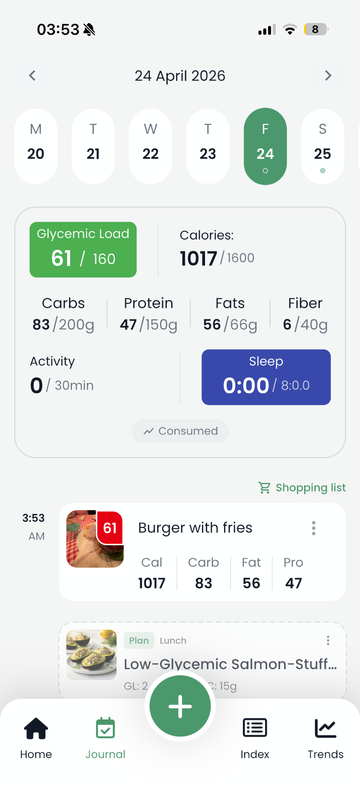
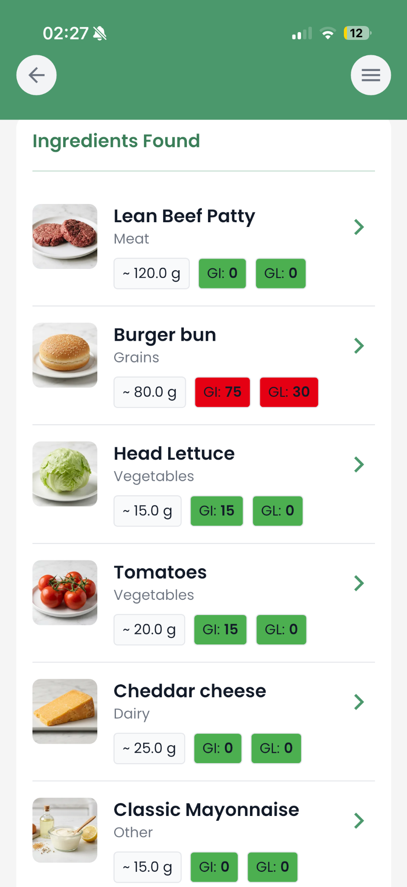
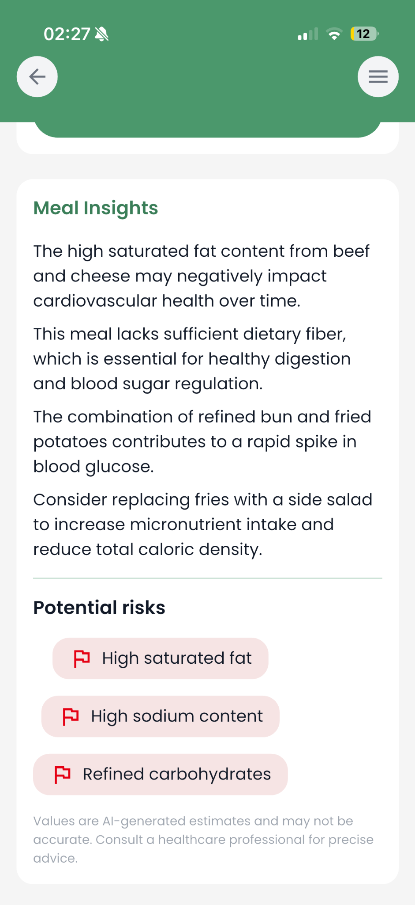

<template id="ad-cta-template">
  <div id="cta-root"
       data-composition-id="ad-cta"
       data-start="0"
       data-duration="4.2"
       data-width="1080"
       data-height="1920">

    <div id="cta-bg"
         class="clip cta-bg"
         data-start="0"
         data-duration="4.2"
         data-track-index="1"></div>

    

    

    

    <div id="cta-logo"
         class="clip cta-logo"
         data-start="0"
         data-duration="4.2"
         data-track-index="10"></div>

    <span id="cta-logo-text"
          class="clip cta-logo-text"
          data-start="0"
          data-duration="4.2"
          data-track-index="11">GL</span>

    <span id="cta-kicker"
          class="clip cta-kicker"
          data-start="0"
          data-duration="4.2"
          data-track-index="12">meal intelligence for everyday food</span>

    <span id="cta-headline"
          class="clip cta-headline"
          data-start="0"
          data-duration="4.2"
          data-track-index="13">Snap. Scan. Understand.</span>

    <span id="cta-subtitle"
          class="clip cta-subtitle"
          data-start="0"
          data-duration="4.2"
          data-track-index="14">Turn one food photo into calories, glycemic load, ingredients, and plain-English meal insights.</span>

    <span id="cta-button"
          class="clip cta-button"
          data-start="0"
          data-duration="4.2"
          data-track-index="15">Try the app</span>

    <span id="cta-footer"
          class="clip cta-footer"
          data-start="0"
          data-duration="4.2"
          data-track-index="16">Template-ready for TikTok, Reels, and Shorts campaigns</span>

    <div id="cta-pulse-ring"
         class="clip cta-pulse-ring"
         data-start="0"
         data-duration="4.2"
         data-track-index="17"></div>

    <style>
      #cta-root {
        --text: #111827;
        --muted: #737b8a;
        --green: #4b9d6c;
        --green-dark: #2b724f;
        --red: #ee001b;
        --font: Inter, ui-sans-serif, system-ui, -apple-system, BlinkMacSystemFont, "Segoe UI", sans-serif;
        position: relative;
        width: 1080px;
        height: 1920px;
        overflow: hidden;
        font-family: Inter, ui-sans-serif, system-ui, -apple-system, BlinkMacSystemFont, "Segoe UI", sans-serif;
        background: #102017;
      }
      #cta-root * { box-sizing: border-box; }
      #cta-root .clip { position: absolute; }
      #cta-bg {
        left: 0;
        top: 0;
        width: 1080px;
        height: 1920px;
        background:
          radial-gradient(circle at 20% 10%, rgba(255,255,255,0.14), transparent 28%),
          radial-gradient(circle at 78% 16%, rgba(238,0,27,0.18), transparent 30%),
          linear-gradient(155deg, #56a978 0%, #2b724f 48%, #102017 100%);
      }
      .cta-screen {
        width: 410px;
        height: 890px;
        object-fit: fill;
        border-radius: 46px;
        box-shadow: 0 42px 100px rgba(0,0,0,0.34);
        opacity: 0.96;
      }
      #cta-screen-left {
        left: -44px;
        top: 560px;
        transform: rotate(-10deg);
      }
      #cta-screen-right {
        right: -58px;
        top: 510px;
        transform: rotate(10deg);
      }
      #cta-screen-front {
        left: 333px;
        top: 470px;
        width: 414px;
        height: 902px;
        transform: rotate(0deg);
        z-index: 4;
      }
      #cta-logo {
        left: 470px;
        top: 132px;
        width: 140px;
        height: 140px;
        border-radius: 40px;
        background: #ffffff;
        box-shadow: 0 24px 80px rgba(0,0,0,0.26);
      }
      #cta-logo-text {
        left: 470px;
        top: 166px;
        width: 140px;
        color: var(--green-dark);
        text-align: center;
        font-size: 58px;
        line-height: 1;
        font-weight: 900;
        letter-spacing: -2px;
      }
      #cta-kicker {
        left: 105px;
        top: 326px;
        width: 870px;
        color: rgba(255,255,255,0.86);
        text-align: center;
        font-size: 27px;
        line-height: 1;
        font-weight: 780;
        letter-spacing: 1.1px;
        text-transform: uppercase;
      }
      #cta-headline {
        left: 80px;
        top: 384px;
        width: 920px;
        color: #ffffff;
        text-align: center;
        font-size: 82px;
        line-height: 0.98;
        font-weight: 900;
        letter-spacing: -3.4px;
      }
      #cta-subtitle {
        left: 128px;
        top: 1470px;
        width: 824px;
        color: rgba(255,255,255,0.90);
        text-align: center;
        font-size: 38px;
        line-height: 1.26;
        font-weight: 520;
        letter-spacing: -0.3px;
      }
      #cta-button {
        left: 230px;
        top: 1665px;
        width: 620px;
        height: 92px;
        border-radius: 999px;
        background: #ffffff;
        color: var(--green-dark);
        text-align: center;
        font-size: 40px;
        line-height: 87px;
        font-weight: 860;
        box-shadow: 0 28px 80px rgba(0,0,0,0.28);
      }
      #cta-footer {
        left: 95px;
        top: 1805px;
        width: 890px;
        color: rgba(255,255,255,0.62);
        text-align: center;
        font-size: 25px;
        line-height: 1;
        font-weight: 560;
      }
      #cta-pulse-ring {
        left: 230px;
        top: 1665px;
        width: 620px;
        height: 92px;
        border-radius: 999px;
        border: 4px solid rgba(255,255,255,0.9);
        opacity: 0;
      }
    </style>

    <script>
      window.__timelines = window.__timelines || {};
      const tl = gsap.timeline({ paused: true });
      tl.fromTo("#cta-bg", { opacity: 0 }, { opacity: 1, duration: 0.36, ease: "power2.out" }, 0);
      tl.fromTo(["#cta-logo", "#cta-logo-text"], { opacity: 0, y: -28, scale: 0.82 }, { opacity: 1, y: 0, scale: 1, duration: 0.48, stagger: 0.04, ease: "back.out(1.7)" }, 0.18);
      tl.fromTo(["#cta-kicker", "#cta-headline"], { opacity: 0, y: 34 }, { opacity: 1, y: 0, duration: 0.52, stagger: 0.12, ease: "power3.out" }, 0.48);
      gsap.set("#cta-screen-left", { opacity: 0, x: -160, y: 80, rotate: -18 });
      gsap.set("#cta-screen-right", { opacity: 0, x: 160, y: 80, rotate: 18 });
      gsap.set("#cta-screen-front", { opacity: 0, y: 110, scale: 0.86 });
      tl.to("#cta-screen-left", { opacity: 0.96, x: 0, y: 0, rotate: -10, duration: 0.70, ease: "power3.out" }, 0.86);
      tl.to("#cta-screen-right", { opacity: 0.96, x: 0, y: 0, rotate: 10, duration: 0.70, ease: "power3.out" }, 0.96);
      tl.to("#cta-screen-front", { opacity: 1, y: 0, scale: 1, duration: 0.72, ease: "back.out(1.4)" }, 1.10);
      tl.to(["#cta-screen-left", "#cta-screen-right", "#cta-screen-front"], { y: -12, duration: 1.30, ease: "power1.inOut" }, 1.90);
      tl.fromTo(["#cta-subtitle", "#cta-button", "#cta-footer"], { opacity: 0, y: 30 }, { opacity: 1, y: 0, duration: 0.46, stagger: 0.10, ease: "power3.out" }, 2.05);
      tl.fromTo("#cta-pulse-ring", { opacity: 0.8, scale: 1 }, { opacity: 0, scale: 1.12, duration: 0.72, ease: "power2.out" }, 2.72);
      tl.to("#cta-button", { scale: 1.035, duration: 0.22, ease: "power2.out", transformOrigin: "center center" }, 3.06);
      tl.to("#cta-button", { scale: 1, duration: 0.28, ease: "power2.out", transformOrigin: "center center" }, 3.28);
      tl.set({}, {}, 4.2);
      window.__timelines["ad-cta"] = tl;
    </script>
  </div>
</template>
